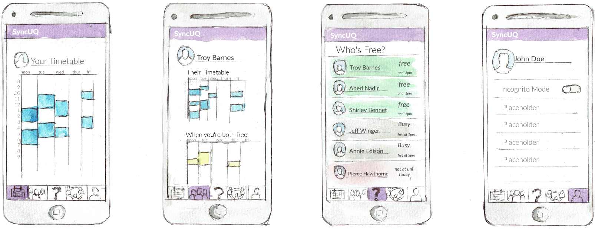

_____ _
| __ \ (_)
| |__) | __ ___ __ _ _ __ __ _ _ __ ___ _ __ ___ _ _ __ __ _
| ___/ '__/ _ \ / _` | '__/ _` | '_ ` _ \| '_ ` _ \| | '_ \ / _` |
| | | | | (_) | (_| | | | (_| | | | | | | | | | | | | | | | (_| |
|_| |_| \___/ \__, |_| \__,_|_| |_| |_|_| |_| |_|_|_| |_|\__, |
__/ | __/ |
|___/ |___/
SyncUQ
March 2017 - Present
What
SyncUQ is the first UQ exclusive schedule sharing social media platform. It lets users find
when their friends are on a break between uni classes, allowing them to quickly find friends who are free to hangout with.
NOTE: as of 19/03/2017, SyncUQ is still under construction. A full release will be avaliable in late May 2017.
How
SyncUQ runs on the heroku platform, it uses a Python backend (using the flask framework) and utilises SQLAlchemy as an ORM to a postgres database. The front end is written in PureScript, a strongly typed lang which compiles to html/css/js.
Why
SyncUQ was made by myself, Max Bo, and Hugo Kawamata. It was conceived after we all realised how often we ask each other "are you free?" or "you at uni?". We pitched it to a few classmates who all agreed that it would be an awesome app, after this we got to work.
DUXCOM
August 2016 - November 2016
What
Duxcom is an open source, isometric, turn based, medieval duck themed video game
How
The game was made using a plethora of technologies, utilising test driven development and continuous integration . Throghout the project I wrote all my code in Java (with a bit of JSON) , and used the tools: Git (for version control), Jenkins (to assist with continous integration), and SonarQube (for ensuring clean code). I also assisted with some graphic design work.
Why
The project was a part of the course, DECO2800. I chose the subject because I wanted first hand experience in the software development lifecycle, and boy did I get it...
Richard Groves Architects
November 2016 - February 2017
What
www.richardgrovesarchitects.com
A website designed to showcase the skills and work of the company.
How
richardgrovesarchitects.com was written from scratch using HTML5, CSS, and JS(jquery). The navbar was from bootstrap. SEO was performed (poorly), and I managed to integrate his business into facebook and google.
Why
My dad needed a website made for his architecture firm. His old website was extremely outdated and he had
absolutely no digital presence.
Being the good son I am, I made him one. I worked closely with him throughout the entire design
process, adhearing to his every requirment. I drew many, many paper prototypes until a design he liked
was found.
The website took over 40 hours to make (most of which was redesigning parts he didn't like).
I learnt a lot throughout the design process, primarily, how important the requirements/prototyping portion
of software development. One miscommunication during that phase can lead to a lot of clean up down the
road...
Tetris
March 2016 - May 2016
What
A remake of the classic game tetris on an atmel 74HC chipset. The game contained features such as high score tracking, 8 bit sound, and joystick support
How
The game was written in C using the atmel studio IDE.
Why
The game was made as part of the assement for an embedded systems programming course. A breadboard and chipset were given to us along with some basic boilerplate code. From this we had a few weeks to implement as many features as we could.
This Website
June 2017 - Present
What
You're looking at it :)
How
This website was written from scratch using HTML5, CSS, and JS. Everything was written without a framework/template aside from the navbar which is from bootstrap
Why
This website started as a side project around august 2016, I had just finished a web design course and wanted
to put my skills to the test.
It started out not that great. But as my skills got better I redesigned it over and over again until I was satisfied. This website will continue to evolve with my skills so checkback in a year or two to see something hopefully pretty amazing.
This websites primary goal was and still is to be a kind of digital hub of things i've made. It's goal has evolved since then to be more of a digital resume.